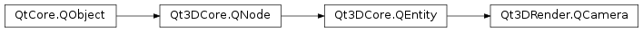

Qt3DRender.QCamera¶
Synopsis¶
Functions¶
- def
aspectRatio() - def
bottom() - def
exposure() - def
farPlane() - def
fieldOfView() - def
left() - def
lens() - def
nearPlane() - def
pan(angle) - def
pan(angle, axis) - def
panAboutViewCenter(angle) - def
panAboutViewCenter(angle, axis) - def
panRotation(angle) - def
position() - def
projectionMatrix() - def
projectionType() - def
right() - def
roll(angle) - def
rollAboutViewCenter(angle) - def
rollRotation(angle) - def
rotate(q) - def
rotateAboutViewCenter(q) - def
rotation(angle, axis) - def
tilt(angle) - def
tiltAboutViewCenter(angle) - def
tiltRotation(angle) - def
top() - def
transform() - def
translate(vLocal[, option=TranslateViewCenter]) - def
translateWorld(vWorld[, option=TranslateViewCenter]) - def
upVector() - def
viewCenter() - def
viewMatrix() - def
viewVector()
Slots¶
- def
setAspectRatio(aspectRatio) - def
setBottom(bottom) - def
setExposure(exposure) - def
setFarPlane(farPlane) - def
setFieldOfView(fieldOfView) - def
setLeft(left) - def
setNearPlane(nearPlane) - def
setPosition(position) - def
setProjectionMatrix(projectionMatrix) - def
setProjectionType(type) - def
setRight(right) - def
setTop(top) - def
setUpVector(upVector) - def
setViewCenter(viewCenter) - def
viewAll() - def
viewEntity(entity) - def
viewSphere(center, radius)
Signals¶
- def
aspectRatioChanged(aspectRatio) - def
bottomChanged(bottom) - def
exposureChanged(exposure) - def
farPlaneChanged(farPlane) - def
fieldOfViewChanged(fieldOfView) - def
leftChanged(left) - def
nearPlaneChanged(nearPlane) - def
positionChanged(position) - def
projectionMatrixChanged(projectionMatrix) - def
projectionTypeChanged(projectionType) - def
rightChanged(right) - def
topChanged(top) - def
upVectorChanged(upVector) - def
viewCenterChanged(viewCenter) - def
viewMatrixChanged() - def
viewVectorChanged(viewVector)
Detailed Description¶
ThePySide2.QtMultimedia.QCameraclass defines a view point through which the scene will be rendered.
-
class
PySide2.Qt3DRender.Qt3DRender.QCamera([parent=nullptr])¶ Parameters: parent – PySide2.Qt3DCore.Qt3DCore::QNodeCreates a new
PySide2.QtMultimedia.QCamerainstance with the specifiedparent.
-
PySide2.Qt3DRender.Qt3DRender.QCamera.CameraTranslationOption¶ This enum specifies how camera view center is translated
Constant Description Qt3DRender.QCamera.TranslateViewCenter Translate the view center causing the view direction to remain the same Qt3DRender.QCamera.DontTranslateViewCenter Don’t translate the view center causing the view direction to change
-
PySide2.Qt3DRender.Qt3DRender.QCamera.aspectRatio()¶ Return type: PySide2.QtCore.floatSee also
PySide2.Qt3DRender.Qt3DRender::QCamera.setAspectRatio()
-
PySide2.Qt3DRender.Qt3DRender.QCamera.aspectRatioChanged(aspectRatio)¶ Parameters: aspectRatio – PySide2.QtCore.float
-
PySide2.Qt3DRender.Qt3DRender.QCamera.bottom()¶ Return type: PySide2.QtCore.floatSee also
PySide2.Qt3DRender.Qt3DRender::QCamera.setBottom()
-
PySide2.Qt3DRender.Qt3DRender.QCamera.bottomChanged(bottom)¶ Parameters: bottom – PySide2.QtCore.float
-
PySide2.Qt3DRender.Qt3DRender.QCamera.exposure()¶ Return type: PySide2.QtCore.floatSee also
PySide2.Qt3DRender.Qt3DRender::QCamera.setExposure()
-
PySide2.Qt3DRender.Qt3DRender.QCamera.exposureChanged(exposure)¶ Parameters: exposure – PySide2.QtCore.float
-
PySide2.Qt3DRender.Qt3DRender.QCamera.farPlane()¶ Return type: PySide2.QtCore.floatSee also
PySide2.Qt3DRender.Qt3DRender::QCamera.setFarPlane()
-
PySide2.Qt3DRender.Qt3DRender.QCamera.farPlaneChanged(farPlane)¶ Parameters: farPlane – PySide2.QtCore.float
-
PySide2.Qt3DRender.Qt3DRender.QCamera.fieldOfView()¶ Return type: PySide2.QtCore.floatSee also
PySide2.Qt3DRender.Qt3DRender::QCamera.setFieldOfView()
-
PySide2.Qt3DRender.Qt3DRender.QCamera.fieldOfViewChanged(fieldOfView)¶ Parameters: fieldOfView – PySide2.QtCore.float
-
PySide2.Qt3DRender.Qt3DRender.QCamera.left()¶ Return type: PySide2.QtCore.floatSee also
PySide2.Qt3DRender.Qt3DRender::QCamera.setLeft()
-
PySide2.Qt3DRender.Qt3DRender.QCamera.leftChanged(left)¶ Parameters: left – PySide2.QtCore.float
-
PySide2.Qt3DRender.Qt3DRender.QCamera.lens()¶ Return type: PySide2.Qt3DRender.Qt3DRender::QCameraLensReturns the current lens.
-
PySide2.Qt3DRender.Qt3DRender.QCamera.nearPlane()¶ Return type: PySide2.QtCore.floatSee also
PySide2.Qt3DRender.Qt3DRender::QCamera.setNearPlane()
-
PySide2.Qt3DRender.Qt3DRender.QCamera.nearPlaneChanged(nearPlane)¶ Parameters: nearPlane – PySide2.QtCore.float
-
PySide2.Qt3DRender.Qt3DRender.QCamera.pan(angle)¶ Parameters: angle – PySide2.QtCore.floatAdjusts the pan angle of the camera by
anglein degrees.
-
PySide2.Qt3DRender.Qt3DRender.QCamera.pan(angle, axis) Parameters: - angle –
PySide2.QtCore.float - axis –
PySide2.QtGui.QVector3D
Adjusts the pan angle of the camera by
anglein degrees on a chosenaxis.- angle –
-
PySide2.Qt3DRender.Qt3DRender.QCamera.panAboutViewCenter(angle, axis)¶ Parameters: - angle –
PySide2.QtCore.float - axis –
PySide2.QtGui.QVector3D
Adjusts the camera pan about view center by
anglein degrees onaxis.- angle –
-
PySide2.Qt3DRender.Qt3DRender.QCamera.panAboutViewCenter(angle) Parameters: angle – PySide2.QtCore.floatAdjusts the camera pan about view center by
anglein degrees.
-
PySide2.Qt3DRender.Qt3DRender.QCamera.panRotation(angle)¶ Parameters: angle – PySide2.QtCore.floatReturn type: PySide2.QtGui.QQuaternionReturns the calculated pan rotation in relation to the
anglein degrees taken in to adjust the camera’s pan or left/right rotation on the Y axis.
-
PySide2.Qt3DRender.Qt3DRender.QCamera.position()¶ Return type: PySide2.QtGui.QVector3DSee also
PySide2.Qt3DRender.Qt3DRender::QCamera.setPosition()
-
PySide2.Qt3DRender.Qt3DRender.QCamera.positionChanged(position)¶ Parameters: position – PySide2.QtGui.QVector3D
-
PySide2.Qt3DRender.Qt3DRender.QCamera.projectionMatrix()¶ Return type: PySide2.QtGui.QMatrix4x4See also
PySide2.Qt3DRender.Qt3DRender::QCamera.setProjectionMatrix()
-
PySide2.Qt3DRender.Qt3DRender.QCamera.projectionMatrixChanged(projectionMatrix)¶ Parameters: projectionMatrix – PySide2.QtGui.QMatrix4x4
-
PySide2.Qt3DRender.Qt3DRender.QCamera.projectionType()¶ Return type: PySide2.Qt3DRender.Qt3DRender::QCameraLens.ProjectionTypeSee also
PySide2.Qt3DRender.Qt3DRender::QCamera.setProjectionType()
-
PySide2.Qt3DRender.Qt3DRender.QCamera.projectionTypeChanged(projectionType)¶ Parameters: projectionType – PySide2.Qt3DRender.Qt3DRender::QCameraLens.ProjectionType
-
PySide2.Qt3DRender.Qt3DRender.QCamera.right()¶ Return type: PySide2.QtCore.floatSee also
PySide2.Qt3DRender.Qt3DRender::QCamera.setRight()
-
PySide2.Qt3DRender.Qt3DRender.QCamera.rightChanged(right)¶ Parameters: right – PySide2.QtCore.float
-
PySide2.Qt3DRender.Qt3DRender.QCamera.roll(angle)¶ Parameters: angle – PySide2.QtCore.floatAdjusts the camera roll by
anglein degrees.
-
PySide2.Qt3DRender.Qt3DRender.QCamera.rollAboutViewCenter(angle)¶ Parameters: angle – PySide2.QtCore.floatAdjusts the camera roll about view center by
anglein degrees.
-
PySide2.Qt3DRender.Qt3DRender.QCamera.rollRotation(angle)¶ Parameters: angle – PySide2.QtCore.floatReturn type: PySide2.QtGui.QQuaternionReturns the calculated roll rotation in relation to the
anglein degrees taken in to adjust the camera’s roll or lean left/right rotation on the Z axis.
-
PySide2.Qt3DRender.Qt3DRender.QCamera.rotate(q)¶ Parameters: q – PySide2.QtGui.QQuaternionRotates the camera with the use of a Quaternion in
q.
-
PySide2.Qt3DRender.Qt3DRender.QCamera.rotateAboutViewCenter(q)¶ Parameters: q – PySide2.QtGui.QQuaternionRotates the camera about the view center with the use of a Quaternion in
q.
-
PySide2.Qt3DRender.Qt3DRender.QCamera.rotation(angle, axis)¶ Parameters: - angle –
PySide2.QtCore.float - axis –
PySide2.QtGui.QVector3D
Return type: Returns the calculated rotation in relation to the
anglein degrees and chosenaxistaken in.- angle –
-
PySide2.Qt3DRender.Qt3DRender.QCamera.setAspectRatio(aspectRatio)¶ Parameters: aspectRatio – PySide2.QtCore.floatSets the camera’s aspect ratio to
aspectRatio.See also
PySide2.Qt3DRender.Qt3DRender::QCamera.aspectRatio()
-
PySide2.Qt3DRender.Qt3DRender.QCamera.setBottom(bottom)¶ Parameters: bottom – PySide2.QtCore.floatSets the bottom of the camera to
bottom.See also
PySide2.Qt3DRender.Qt3DRender::QCamera.bottom()
-
PySide2.Qt3DRender.Qt3DRender.QCamera.setExposure(exposure)¶ Parameters: exposure – PySide2.QtCore.floatSets the camera’s exposure to
exposure.See also
PySide2.Qt3DRender.Qt3DRender::QCamera.exposure()
-
PySide2.Qt3DRender.Qt3DRender.QCamera.setFarPlane(farPlane)¶ Parameters: farPlane – PySide2.QtCore.floatSets the camera’s far plane to
farPlaneSee also
PySide2.Qt3DRender.Qt3DRender::QCamera.farPlane()
-
PySide2.Qt3DRender.Qt3DRender.QCamera.setFieldOfView(fieldOfView)¶ Parameters: fieldOfView – PySide2.QtCore.floatSets the camera’s field of view to
fieldOfViewin degrees.See also
PySide2.Qt3DRender.Qt3DRender::QCamera.fieldOfView()
-
PySide2.Qt3DRender.Qt3DRender.QCamera.setLeft(left)¶ Parameters: left – PySide2.QtCore.floatSets the left of the camera to
left.See also
PySide2.Qt3DRender.Qt3DRender::QCamera.left()
-
PySide2.Qt3DRender.Qt3DRender.QCamera.setNearPlane(nearPlane)¶ Parameters: nearPlane – PySide2.QtCore.floatSets the camera’s near plane to
nearPlane.See also
PySide2.Qt3DRender.Qt3DRender::QCamera.nearPlane()
-
PySide2.Qt3DRender.Qt3DRender.QCamera.setPosition(position)¶ Parameters: position – PySide2.QtGui.QVector3DSets the camera’s position in 3D space to
position.See also
PySide2.Qt3DRender.Qt3DRender::QCamera.position()
-
PySide2.Qt3DRender.Qt3DRender.QCamera.setProjectionMatrix(projectionMatrix)¶ Parameters: projectionMatrix – PySide2.QtGui.QMatrix4x4Sets the camera’s projection matrix to
projectionMatrix.See also
PySide2.Qt3DRender.Qt3DRender::QCamera.projectionMatrix()
-
PySide2.Qt3DRender.Qt3DRender.QCamera.setProjectionType(type)¶ Parameters: type – PySide2.Qt3DRender.Qt3DRender::QCameraLens.ProjectionTypeSets the camera’s projection type to
type.See also
PySide2.Qt3DRender.Qt3DRender::QCamera.projectionType()
-
PySide2.Qt3DRender.Qt3DRender.QCamera.setRight(right)¶ Parameters: right – PySide2.QtCore.floatSets the right of the camera to
right.See also
PySide2.Qt3DRender.Qt3DRender::QCamera.right()
-
PySide2.Qt3DRender.Qt3DRender.QCamera.setTop(top)¶ Parameters: top – PySide2.QtCore.floatSets the top of the camera to
top.See also
PySide2.Qt3DRender.Qt3DRender::QCamera.top()
-
PySide2.Qt3DRender.Qt3DRender.QCamera.setUpVector(upVector)¶ Parameters: upVector – PySide2.QtGui.QVector3DSets the camera’s up vector to
upVector.See also
PySide2.Qt3DRender.Qt3DRender::QCamera.upVector()
-
PySide2.Qt3DRender.Qt3DRender.QCamera.setViewCenter(viewCenter)¶ Parameters: viewCenter – PySide2.QtGui.QVector3DSets the camera’s view center to
viewCenter.See also
PySide2.Qt3DRender.Qt3DRender::QCamera.viewCenter()
-
PySide2.Qt3DRender.Qt3DRender.QCamera.tilt(angle)¶ Parameters: angle – PySide2.QtCore.floatAdjusts the tilt angle of the camera by
anglein degrees.
-
PySide2.Qt3DRender.Qt3DRender.QCamera.tiltAboutViewCenter(angle)¶ Parameters: angle – PySide2.QtCore.floatAdjusts the camera tilt about view center by
anglein degrees.
-
PySide2.Qt3DRender.Qt3DRender.QCamera.tiltRotation(angle)¶ Parameters: angle – PySide2.QtCore.floatReturn type: PySide2.QtGui.QQuaternionReturns the calculated tilt rotation in relation to the
anglein degrees taken in to adjust the camera’s tilt or up/down rotation on the X axis.
-
PySide2.Qt3DRender.Qt3DRender.QCamera.top()¶ Return type: PySide2.QtCore.floatSee also
PySide2.Qt3DRender.Qt3DRender::QCamera.setTop()
-
PySide2.Qt3DRender.Qt3DRender.QCamera.topChanged(top)¶ Parameters: top – PySide2.QtCore.float
-
PySide2.Qt3DRender.Qt3DRender.QCamera.transform()¶ Return type: PySide2.Qt3DCore.Qt3DCore::QTransformReturns the camera’s position via transform.
-
PySide2.Qt3DRender.Qt3DRender.QCamera.translate(vLocal[, option=TranslateViewCenter])¶ Parameters: - vLocal –
PySide2.QtGui.QVector3D - option –
PySide2.Qt3DRender.Qt3DRender::QCamera.CameraTranslationOption
Translates the camera’s position and its view vector by
vLocalin local coordinates. Theoptionallows for toggling whether the view center should be translated.- vLocal –
-
PySide2.Qt3DRender.Qt3DRender.QCamera.translateWorld(vWorld[, option=TranslateViewCenter])¶ Parameters: - vWorld –
PySide2.QtGui.QVector3D - option –
PySide2.Qt3DRender.Qt3DRender::QCamera.CameraTranslationOption
Translates the camera’s position and its view vector by
vWorldin world coordinates. Theoptionallows for toggling whether the view center should be translated.- vWorld –
-
PySide2.Qt3DRender.Qt3DRender.QCamera.upVector()¶ Return type: PySide2.QtGui.QVector3DSee also
PySide2.Qt3DRender.Qt3DRender::QCamera.setUpVector()
-
PySide2.Qt3DRender.Qt3DRender.QCamera.upVectorChanged(upVector)¶ Parameters: upVector – PySide2.QtGui.QVector3D
-
PySide2.Qt3DRender.Qt3DRender.QCamera.viewAll()¶ Rotates and moves the camera so that it’s
PySide2.Qt3DRender.Qt3DRender::QCamera.viewCenter()is the center of the scene’s bounding volume and the entire scene fits in the view port.Note
Only works if the lens is in perspective projection mode.
See also
Qt3D.Render::Camera::projectionType
-
PySide2.Qt3DRender.Qt3DRender.QCamera.viewCenter()¶ Return type: PySide2.QtGui.QVector3DSee also
PySide2.Qt3DRender.Qt3DRender::QCamera.setViewCenter()
-
PySide2.Qt3DRender.Qt3DRender.QCamera.viewCenterChanged(viewCenter)¶ Parameters: viewCenter – PySide2.QtGui.QVector3D
-
PySide2.Qt3DRender.Qt3DRender.QCamera.viewEntity(entity)¶ Parameters: entity – PySide2.Qt3DCore.Qt3DCore::QEntityRotates and moves the camera so that it’s
PySide2.Qt3DRender.Qt3DRender::QCamera.viewCenter()is the center of theentity‘s bounding volume and the entire entity fits in the view port.Note
Only works if the lens is in perspective projection mode.
See also
Camera.projectionType
-
PySide2.Qt3DRender.Qt3DRender.QCamera.viewMatrix()¶ Return type: PySide2.QtGui.QMatrix4x4
-
PySide2.Qt3DRender.Qt3DRender.QCamera.viewMatrixChanged()¶
-
PySide2.Qt3DRender.Qt3DRender.QCamera.viewSphere(center, radius)¶ Parameters: - center –
PySide2.QtGui.QVector3D - radius –
PySide2.QtCore.float
Rotates and moves the camera so that it’s
PySide2.Qt3DRender.Qt3DRender::QCamera.viewCenter()iscenterand a sphere ofradiusfits in the view port.Note
Only works if the lens is in perspective projection mode.
See also
Qt3D.Render::Camera::projectionType
- center –
-
PySide2.Qt3DRender.Qt3DRender.QCamera.viewVector()¶ Return type: PySide2.QtGui.QVector3D
-
PySide2.Qt3DRender.Qt3DRender.QCamera.viewVectorChanged(viewVector)¶ Parameters: viewVector – PySide2.QtGui.QVector3D
© 2018 The Qt Company Ltd. Documentation contributions included herein are the copyrights of their respective owners. The documentation provided herein is licensed under the terms of the GNU Free Documentation License version 1.3 as published by the Free Software Foundation. Qt and respective logos are trademarks of The Qt Company Ltd. in Finland and/or other countries worldwide. All other trademarks are property of their respective owners.